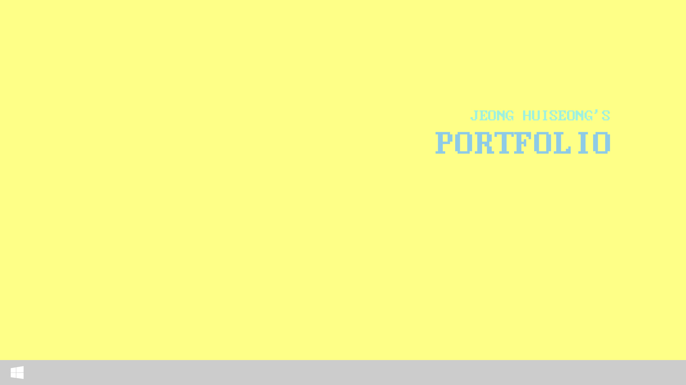

자기소개
제작 홈페이지
제작 홈페이지
제작 홈페이지
성실한
정희성입니다.
식사는 하셨습니까 ~?
외국 사람들이 한국에 와서 제일 신기해하는 인사 중에 하나라고 합니다.
그만큼 한국인은 인사, 안부로도 식사를 물을 정도로 밥이 중요합니다.
한국인은 밥심이라는 말도 있죠?
이 포트폴리오를 보시는 모든 분들, 식사 꼭 하시고 커피 한잔의 여유를 가지며 리프레쉬하시는게 어떨까요?

1999년 3월 22일생
2018.02 반여고등학교 졸업
2023.02 동의대학교 영어학과 졸업
2023.06 부산산업직업전문학교 수료
컴퓨터활용능력 1급
GTQ 1급
GTQi 1급

저는 저를 '도전적인 에너자이저'라고 표현하고 싶습니다.
한계는 자신이 생각하고있는 것보다 더 멀리 위치해있다고 생각합니다. 따라서 저는 힘들다고 생각이 들 때 '한 번만 더, 몇 분만 더 하자'라는 생각을 가지고 도전하는 자세를 취하고 있습니다. 또한, 이러한 건강한 생각과 더불어 건강한 신체를 위해 꾸준하게 운동을 함으로써 멘탈과 피지컬 둘 다 챙기고 있습니다.
저는 어렸을 때부터 색감을 가지고 어울리는 색상을 매치하는 것과 레이아웃을 짜는 것을 좋아했습니다. 그리고 눈썰미도 좋은 편에 주변 둘러보는 것을 좋아해 항상 빠르게 바뀌는 트렌드에 민감했습니다. 그리고 중학교 무렵부터 혼자 포토샵을 독학해 네이버 카페의 배너같은 것을 만드는걸 좋아했고, 레이아웃이 간단해보이는 홈페이지를 발견하면 html과 css를 복사해 메모장에서 혼자 사진을 바꿔보기도 하고 분석하기도 했습니다. 물론 그 때는 아무런 지식도 없고 사진을 다 넣어보면서 위치를 파악해 그 위치에 맞는 사진을 다시 배치하곤 했습니다. 더 공부를 했으면 좋았겠지만 공부 방법이나 당시의 학업에 밀려 관심도가 서서히 떨어졌었습니다. 하지만 제 마음 한켠엔 편집디자인과 웹퍼블리싱이 남아있었습니다.
그렇게 저는 이과로 진학 후, 영어에 대해 더 배워보고 싶어서 영어를 전공하게 되었습니다. 그렇게 무난하게 졸업 후, 저에게 직업전문학교에서 제가 이전에 관심있었던 분야를 배워보지 않겠냐는 전화를 받아 이 기회를 놓치지 않고 열심히 배우고, 따로 더 찾고 공부했습니다.
저는 요즘 흔히 말하는 '갓생러'에 속한다고 생각합니다. 물론 힘들 때도 있지만 저는 자기개발을 하는 것을 좋아하기 때문에 직업학교에서 열심히 배운 후, 운동도 소홀히 하지 않고 취침 전까지 웹퍼블리싱 공부에 몰두했습니다. 항상 배우려는 자세를 유지하고, 완벽한 것은 없다는 생각으로 여러 번 살피고, 분석하고, 노력했습니다.
또한, 저는 눈치가 상당히 빠른 편입니다. 이 점이 장점이 될 때가 많긴 하지만 오히려 소심해지는 면도 있습니다. 예를 들어, 어떠한 질문이 생겨 질문을 하려고 할 때, '내가 너무 쉬운걸 질문하나? 당연한 질문인가?'라는 생각이 들어 생각이 많아지고 질문을 잘 못할 때가 생깁니다. 저도 이런 부분이 답답하고 극복해야겠다고 생각해 평소에 제가 알고 있는 답의 질문을 일부로 한 번씩 질문해 질문을 받는 사람들은 '이런거에 대해 별 생각없이 친절히 답을 잘 해주는구나'라고 혼자 깨닫고 소심한 태도를 극복하려고 노력중입니다.
저는 언제나 배우려는 자세가 되어있으며, 현재 위치에 안주하지 않고 더 발전하며 집단에 없어서는 안될 인재가 되는 것이 목표입니다. 제가 하고 있는 이 분야가 빠르게 변화하는 분야인 것을 생각하면 아주 큰 장점과 목표를 가지고 있다고 생각합니다. 즐기는 자는 이기지 못한다는 말이 있습니다. 제가 좋아하는 분야인만큼 시대적 흐름에 잘 맞춰 발전해나가는 사람이 되겠습니다. 긴 글 읽어주셔서 감사합니다.